SDM algorithms
RStudio project
Open the RStudio project that we created in the first session. I recommend to use this RStudio project for the entire course and within the RStudio project create separate R scripts for each session.
- Create a new empty R script by going to the tab “File”, select “New File” and then “R script”
- In the new R script, type
# Session b6: SDM algorithmsand save the file in your folder “scripts” within your project folder, e.g. as “b6_SDM_algorithms.R”
1 Introduction
So far, we have learnt to fit GLMs to species presence-absence data. GLMs are only one, very simple parametric method for fitting SDMs. There are many more algorithms out there (Elith et al. 2006; Thuiller et al. 2009; Guisan, Thuiller, and Zimmermann 2017). Here, we will get to know a few of them. Remember the five general model building steps: (i) conceptualisation, (ii) data preparation, (iii) model fitting, (iv) assessment and (v) predictions (Zurell et al. 2020). These are the same for all SDMs independent of the particular algorithm used. In this tutorial, we will concentrate on model fitting again but will also run model assessments and make predictions in order to compare the different algorithms.
1.1 Recap of last session: data and model building steps
I will illustrate the different algorithms using the Yellowhammer example that you worked on in practical b3, based on data from the British breeding and wintering birds citizen science atlas (Gillings et al. 2019). The species presense/absence data and the bioclimatic variables at these locations are available from file. We first check for multicollinearity and select weakly correlated variables based on their univariate variable importance.
library(terra)
library(mecofun)
bg <- terra::rast('data/Prac3_UK_mask.grd')
sp_dat <- read.table('data/Prac3_YellowHammer.txt',header=T)
# Check for multicollinearity
cor_mat <- cor(sp_dat[,-c(1:3)], method='spearman')
var_sel <- select07(X=sp_dat[,-c(1:3)],
y=sp_dat$Emberiza_citrinella,
threshold=0.7)
# Inspect weakly correlated variables
var_sel$pred_sel## [1] "bio12" "bio9" "bio1" "bio8" "bio3"# Let's only use the two most important predictors for now
my_preds <- c('bio12','bio9')In session 4 on model assessment, we learned that the models should
be validated on indepedent validation data and we have learned how to
run a 5-fold cross-validation. The crossvalSDM() function
could also be used with the algorithms introduced in this practical.
However, to simplify matters let’s rather split the data into training
data and testing data once. For a proper validation this split-sample
should be repeated many times (e.g. n=100). Nevertheless, this unique
split-sample will still give us an idea of model performance and will
allow us to compare the different algorithms.
# First, we randomly select 70% of the rows that will be used as training data
train_i <- sample(seq_len(nrow(sp_dat)), size=round(0.7*nrow(sp_dat)))
# Then, we can subset the training and testing data
sp_train <- sp_dat[train_i,]
sp_test <- sp_dat[-train_i,]
# We store the split information for later:
write(train_i, file='data/indices_traindata.txt')For making predictions in space, we also load the current climate layers that we downloaded and processed previously. Please remember that the worldclim layers come in geographic projection in lon/lat format while the bird data are sampled on the British National Grid. To harmonise these data, we reprojected the climate data onto the National Grid.
bio_curr <- terra::rast('data/Prac4_UK_bio_curr.tif')2 Model algorithms
Typically, you should decide on appropriate modelling algorithms
during the conceptualisation phase. Let’s assume our study objectives
were to compare species-environment relationships and predicted species
distributions across several SDM algorithms, for example to quantify the
uncertainty due to the model class (Araujo and
New 2007; Thuiller et al. 2009; Buisson et al. 2010). We will
test several different SDM algorithms that can be broadly classified
into profile (envelope and distance-based) methods, regression-based
methods and non-parametric machine-learning methods Guisan, Thuiller, and Zimmermann (2017). The
list of models we treat here is not exhaustive but should give you a
rough overview of what concepts and methods are out there. Most of the
methods used here are available in the package dismo.
2.1 Profile (envelope) methods
Profile methods constitute the oldest family of SDM algorithms and are the only “true” presence-only methods that do not need any absence or background data. We can distinguish the classical envelope approach and distance-based methods. Here, we only look at the envelope method BIOCLIM.
2.1.1 BIOCLIM
BIOCLIM is a pioneering envelope approach (Booth et al. 2014). It defines the niche as an
n-dimensional, rectangular bounding box, which is similar to
Hutchinson’s view of the n-dimensional hyperspace (Hutchinson 1957). To reduce sensitivity to
outliers, the bounding box is limited by only considering a certain
percentile range (here, 5-95%) of the species records along each
environmental gradient. In predicts, the BIOCLIM algorithm
is implemented in the function envelope() and will produce
continuous probabilities between 0 and 1, indicating how similar/close
the environmental conditions are to the median conditions.
Previous studies have shown that the BIOCLIM algorithm performs poorly compared to other methods (Elith et al. 2006) and should not be used for predicting species distribution under climate change (Elith and Graham 2009). It is still useful in some situations, for example envelope methods are more prominent in paleoecological studies where fossil data are sparse.
library(predicts)
# Fit BIOCLIM model - the algorithm expects a data.frame with environmental variables, but only at the presence locations
m_bc <- predicts::envelope(sp_train[sp_train$Emberiza_citrinella==1,my_preds])
plot(m_bc)
The resulting plot shows the bounding box (5-95% percentile range). Green circles outside the bounding box would indicate occurrences that fall within the 2.5-97.5% percentile range, and the red crosses indicate occurrences that correspond to extreme environmental values beyond the 2.5-97.5% percentile range. We can also visualise this as response surface to get a better idea what BIOCLIM is predicting.
# For the response surface, we first prepare the 3D-grid with environmental gradient and predictions
xyz <- expand.grid(
seq(min(sp_train[,my_preds[1]]),max(sp_train[,my_preds[1]]),length=50),
seq(min(sp_train[,my_preds[2]]),max(sp_train[,my_preds[2]]),length=50))
names(xyz) <- my_preds
# Make predictions to gradients:
xyz$z <- predict(m_bc, xyz)
# Define colour palette:
library(RColorBrewer)
cls <- colorRampPalette(rev(brewer.pal(11, 'RdYlBu')))(100)
# Plot response surface:
library(lattice)
wireframe(z ~ bio12 + bio9, data = xyz, zlab = list("Occurrence prob.", rot=90),
drape = TRUE, col.regions = cls, scales = list(arrows = FALSE),
zlim = c(0, 1), main='BIOCLIM', xlab='bio12', ylab='bio9',
screen=list(z = -120, x = -70, y = 3))We nicely see the median as the peak of the surface, representing the
median environmental conditions in presence locations. Let’s look at the
corresponding partial response plots. The predicts package
offers a function partialResponse() to calculate the
partial response.
# Plot partial response curves:
par(mfrow=c(1,2))
plot(partialResponse(m_bc, var=1,nsteps=50),type='l', main='BIOCLIM', ylab='Occurrence probability', xlab=my_preds[1], ylim=c(0,1))
plot(partialResponse(m_bc, var=2,nsteps=50),type='l', main='BIOCLIM', ylab='Occurrence probability', xlab=my_preds[2], ylim=c(0,1))Last, we validate model performance on the hold-out test data.
# We use the default MaxSens+Spec threshold:
(perf_bc <- evalSDM(sp_test$Emberiza_citrinella, predict(m_bc, sp_test[,my_preds])))## AUC TSS Kappa Sens Spec PCC D2 thresh
## 1 0.7579365 0.4017857 0.4090909 0.547619 0.8541667 0.7111111 -0.3738568 0.175Finally, let’s map the predicted occurrence probabilities across Britain and the predicted presence/absence.
# Map predictions
bio_curr_df <- as.data.frame(bio_curr,cell=T,xy=T)
pred_bc_curr <- predict(m_bc, bio_curr_df[,my_preds])
r_bc_pred <- r_bc_bin <- terra::rast(data.frame(bio_curr_df[,c('x','y')], pred_bc_curr), type='xyz')
# Threshold predictions using the maxTSS threshold (max sens+spec)
values(r_bc_bin) <- ifelse(values(r_bc_pred)>=perf_bc$thresh, 1, 0)
# plot the maps
plot(c(r_bc_pred, r_bc_bin),main=c('BIOCLIM prob.','BIOCLIM bin.'), axes=F) 
2.2 Regression-based methods
2.2.1 Generalised linear models (GLMs)
We already know GLMs from the previous tutorials. We can fit linear,
quadratic or higher polynomial terms (check poly()) and
interactions between predictors.
# Fit GLM
m_glm <- step(glm( Emberiza_citrinella ~ bio12 + I(bio12^2) + bio9 + I(bio9^2),
family='binomial', data=sp_train))## Start: AIC=203.91
## Emberiza_citrinella ~ bio12 + I(bio12^2) + bio9 + I(bio9^2)
##
## Df Deviance AIC
## - I(bio9^2) 1 194.26 202.26
## - bio9 1 194.34 202.34
## - I(bio12^2) 1 194.73 202.73
## <none> 193.91 203.91
## - bio12 1 197.26 205.26
##
## Step: AIC=202.26
## Emberiza_citrinella ~ bio12 + I(bio12^2) + bio9
##
## Df Deviance AIC
## - I(bio12^2) 1 194.80 200.80
## - bio9 1 194.81 200.81
## <none> 194.26 202.26
## - bio12 1 197.33 203.33
##
## Step: AIC=200.8
## Emberiza_citrinella ~ bio12 + bio9
##
## Df Deviance AIC
## - bio9 1 195.03 199.03
## <none> 194.80 200.80
## - bio12 1 283.89 287.89
##
## Step: AIC=199.03
## Emberiza_citrinella ~ bio12
##
## Df Deviance AIC
## <none> 195.03 199.03
## - bio12 1 289.04 291.04# Now, we plot the response surface:
xyz$z <- predict(m_glm, xyz, type='response')
wireframe(z ~ bio12 + bio9, data = xyz, zlab = list("Occurrence prob.", rot=90),
drape = TRUE, col.regions = cls, scales = list(arrows = FALSE),
zlim = c(0, 1), main='GLM', xlab='bio12', ylab='bio9',
screen=list(z = -120, x = -70, y = 3))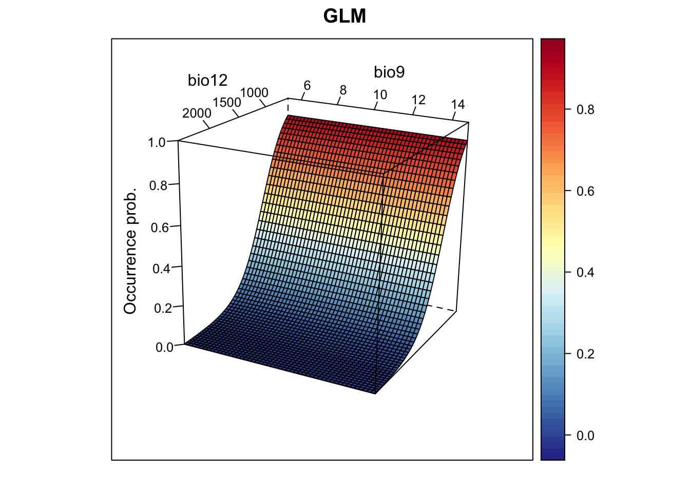
# Plot partial response curves using the mecofun package:
library(mecofun)
par(mfrow=c(1,2))
partial_response(m_glm, predictors = sp_train[,my_preds], main='GLM', ylab='Occurrence probability')# Performance measures
(perf_glm <- evalSDM(sp_test$Emberiza_citrinella, predict(m_glm, sp_test[,my_preds], type='response') ))## AUC TSS Kappa Sens Spec PCC D2 thresh
## 1 0.890377 0.7172619 0.7119645 0.9047619 0.8125 0.8555556 0.3702978 0.525# Map predictions:
bio_curr_df <- data.frame(crds(bio_curr[[my_preds]]), as.points(bio_curr[[my_preds]]))
r_glm_bin <- r_glm_pred <- terra::rast(cbind(bio_curr_df[,1:2],
predict(m_glm, bio_curr_df, type='response')),
type='xyz', crs=crs(bio_curr))
values(r_glm_bin) <- ifelse(values(r_glm_pred)>=perf_glm$thresh, 1, 0)
plot(c(r_glm_pred, r_glm_bin),main=c('GLM prob.','GLM bin.'), axes=F) 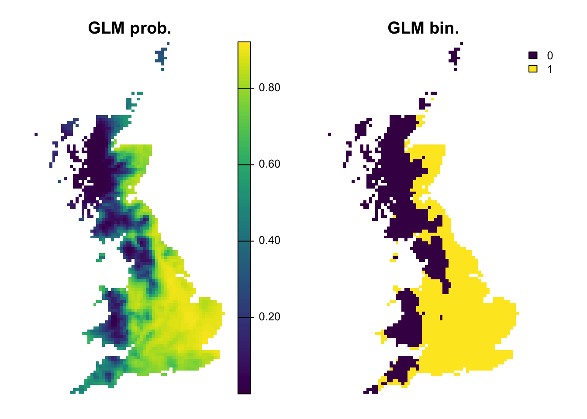
2.2.2 Generalised additive models (GAMs)
GAMs are a semi-parametric regression method that use data-defined, non-parametric smoothing functions to fit non-linear species-environment relationships. GAMs do not fit the response function to all data points at once, but use a moving-window approach to fit a local smoother to a proportion of the data. Small window sizes will yield highly flexible response shapes while large window sizes will produce less flexible response shapes that are closer to a parametric GLM. Different packages for fitting GAMs are available in R. Here, we will use the mgcv package.
library(mgcv)
# Fit GAM with spline smoother
m_gam <- mgcv::gam( Emberiza_citrinella ~ s(bio12,k=4) + s(bio9, k=4),
family='binomial', data=sp_train)
# Now, we plot the response surface:
xyz$z <- predict(m_gam, xyz[,1:2], type='response')
wireframe(z ~ bio12 + bio9, data = xyz, zlab = list("Occurrence prob.", rot=90),
drape = TRUE, col.regions = cls, scales = list(arrows = FALSE),
zlim = c(0, 1), main='GAM', xlab='bio12', ylab='bio9',
screen=list(z = -120, x = -70, y = 3))# Plot partial response curves:
par(mfrow=c(1,2))
partial_response(m_gam, predictors = sp_train[,my_preds], main='GAM', ylab='Occurrence probability')# Performance measures
(perf_gam <- evalSDM(sp_test$Emberiza_citrinella, predict(m_gam, sp_test[,my_preds], type='response') ))## AUC TSS Kappa Sens Spec PCC D2 thresh
## 1 0.8859127 0.7172619 0.7119645 0.9047619 0.8125 0.8555556 0.3654815 0.53# Map predictions (the data frame bio_curr_df was defined previously):
r_gam_bin <- r_gam_pred <- terra::rast(cbind(bio_curr_df[,1:2],
predict(m_gam, bio_curr_df, type='response')),
type='xyz', crs=crs(bio_curr))
values(r_gam_bin) <- ifelse(values(r_gam_pred)>=perf_gam$thresh, 1, 0)
plot(c(r_gam_pred, r_gam_bin),
main=c('GAM prob.','GAM bin.'), axes=F) 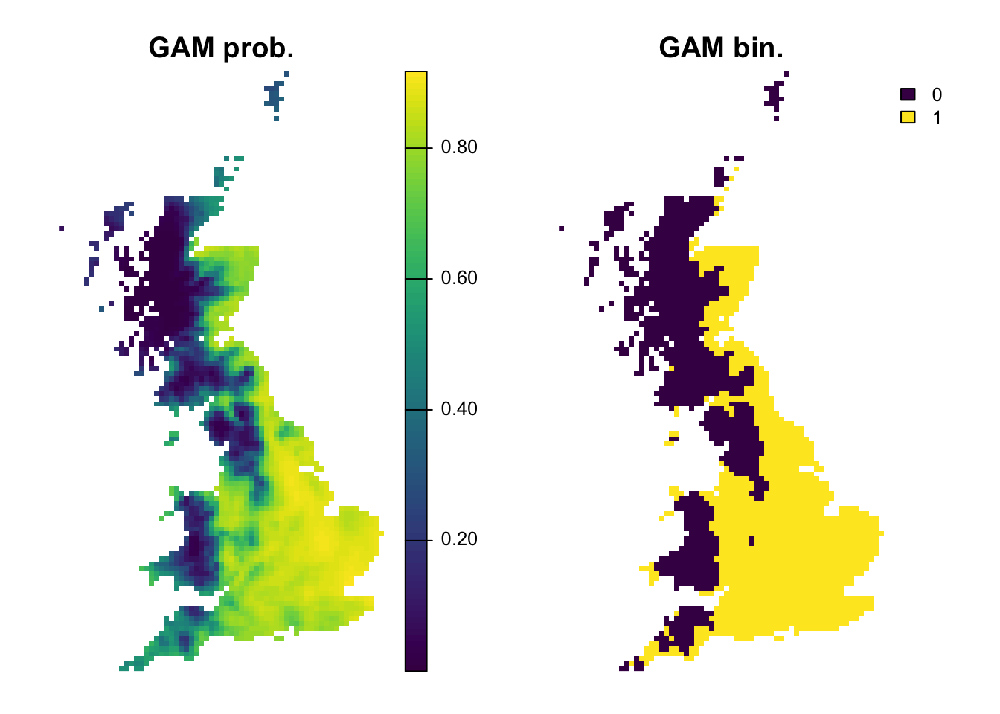
2.3 Machine-learning methods
There are a number of different non-parametric machine-learning methods that are commonly used in SDMs, and new methods are constantly appearing. A few methods like Classification and Regression Trees (CART) and Artificial Neural Networks (ANN) have been around for some time, while other methods such as Boosted Regression Trees (BRTs), Random Forests (RFs) and Maximum Entropy (MaxEnt) have only become popular over the last decade.
2.3.1 Classification and regression trees (CART)
CARTs are a recursive partitioning method that aim to divide the data into homogeneous subgroups (Franklin 2010; Guisan, Thuiller, and Zimmermann 2017). They grow a decision tree by repeatedly splitting the data such that the splits help separating presences and absences. Thus, CARTs search along each environmental gradient for those splitting rules (nodes) that best separate the observations. Of course, we could perfectly fit all data by that procedure, which is rarely desirable as it will decrease the bias for the training data but increase the variance for a different sample (the bias-variance tradeoff). Thus, the procedure is basically to grow the tree, stop the tree and prune the tree to find the optimal tree size.
Again, different packages are available for fitting CARTs,
e.g. rpart and tree. The package rpart offers
better control of model fitting and tree size optimization. It uses
internal cross-validation (default xval=10) for evaluating
bias-variance tradeoff and optimizing tree size. Another important
control parameter is the minimum number of observations (default
minsplit=20) that must be available to define a split.
library(rpart)
# Fit CART
m_cart <- rpart(Emberiza_citrinella ~ bio12 + bio9,
data=sp_train, control=rpart.control(minsplit=20,xval=10))
# Have a look at the data splits:
print(m_cart)## n= 211
##
## node), split, n, deviance, yval
## * denotes terminal node
##
## 1) root 211 51.8862600 0.56398100
## 2) bio12>=1233.15 63 5.4285710 0.09523810
## 4) bio9< 9.851603 44 0.9772727 0.02272727 *
## 5) bio9>=9.851603 19 3.6842110 0.26315790 *
## 3) bio12< 1233.15 148 26.7229700 0.76351350
## 6) bio12>=875.9535 41 10.1951200 0.53658540
## 12) bio9>=10.09972 29 7.1724140 0.44827590
## 24) bio12< 1004.628 10 1.6000000 0.20000000 *
## 25) bio12>=1004.628 19 4.6315790 0.57894740 *
## 13) bio9< 10.09972 12 2.2500000 0.75000000 *
## 7) bio12< 875.9535 107 13.6074800 0.85046730 *plot(m_cart, margin=0.1)
text(m_cart, cex = 0.8)# Now, we plot the response surface:
xyz$z <- predict(m_cart, xyz)
wireframe(z ~ bio12 + bio9, data = xyz, zlab = list("Occurrence prob.", rot=90),
drape = TRUE, col.regions = cls, scales = list(arrows = FALSE),
zlim = c(0, 1), main='CART', xlab='bio12', ylab='bio9',
screen=list(z = -120, x = -70, y = 3))# Plot partial response curves:
par(mfrow=c(1,2))
partial_response(m_cart, predictors = sp_train[,my_preds], main='CART', ylab='Occurrence probability')# Performance measures of GAM with spline-smoother
(perf_cart <- evalSDM(sp_test$Emberiza_citrinella, predict(m_cart, sp_test[,my_preds]) ))## AUC TSS Kappa Sens Spec PCC D2 thresh
## 1 0.8196925 0.5922619 0.5958084 0.7380952 0.8541667 0.8 0.169344 0.8# Map predictions:
r_cart_bin <- r_cart_pred <- terra::rast(cbind(bio_curr_df[,1:2],
predict(m_cart, bio_curr_df)),
type='xyz', crs=crs(bio_curr))
values(r_cart_bin) <- ifelse(values(r_cart_pred)>=perf_cart$thresh, 1, 0)
plot(c(r_cart_pred, r_cart_bin),main=c('CART prob.','CART bin.'), axes=F) 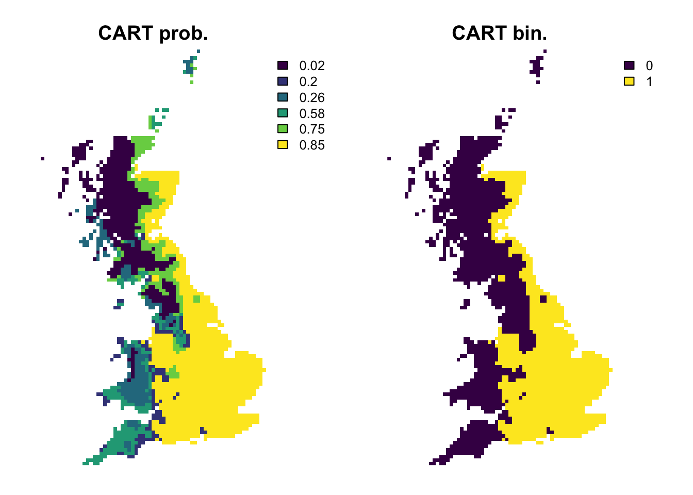
2.3.2 Random Forests (RFs)
Regression models or classification models can be affected by local optima and noise in the data. They usually have low bias (fit the training data very well) but high variance (noisy/poorer performance when predicting to non-training data). Model averaging has been proposed as possible solution (Hastie, Tibshirani, and Friedman 2009). In recent years, so-called bagging and boosting methods have been developed for combining or averaging different models. Random Forests use a bagging procedure for averaging the outputs of a multitude of different CARTs. Bagging stands for “bootstrap aggregation”. Basically, we fit many CARTs to bootstrapped samples of the training data and then either average the results in case of regression trees or make a simple vote in case of classification trees (committee averaging)(Hastie, Tibshirani, and Friedman 2009; Guisan, Thuiller, and Zimmermann 2017). An important feature of Random Forests are the out-of-bag samples, which means that the predictions/fit for a specific data point is only derived from averaging trees that did not include this data point during tree growing. Thus, the output of Random Forests is essentially cross-validated. Random Forests estimate variable importance by a permutation procedure, which measures for each variable the drop in mean accuracy when this variables is permutated.
library(randomForest)
# Fit RF (a question/warning pops up whether we really want to do regression: YES, we want to. With binary data, you could also use classification by setting the argument y=as.factor(sp_train$Emberiza_citrinella) but from experience regression produces slightly better results)
m_rf <- randomForest( x=sp_train[,my_preds], y=sp_train$Emberiza_citrinella,
ntree=1000, importance =T)
# Variable importance:
importance(m_rf,type=1)## %IncMSE
## bio12 71.11887
## bio9 15.49371varImpPlot(m_rf)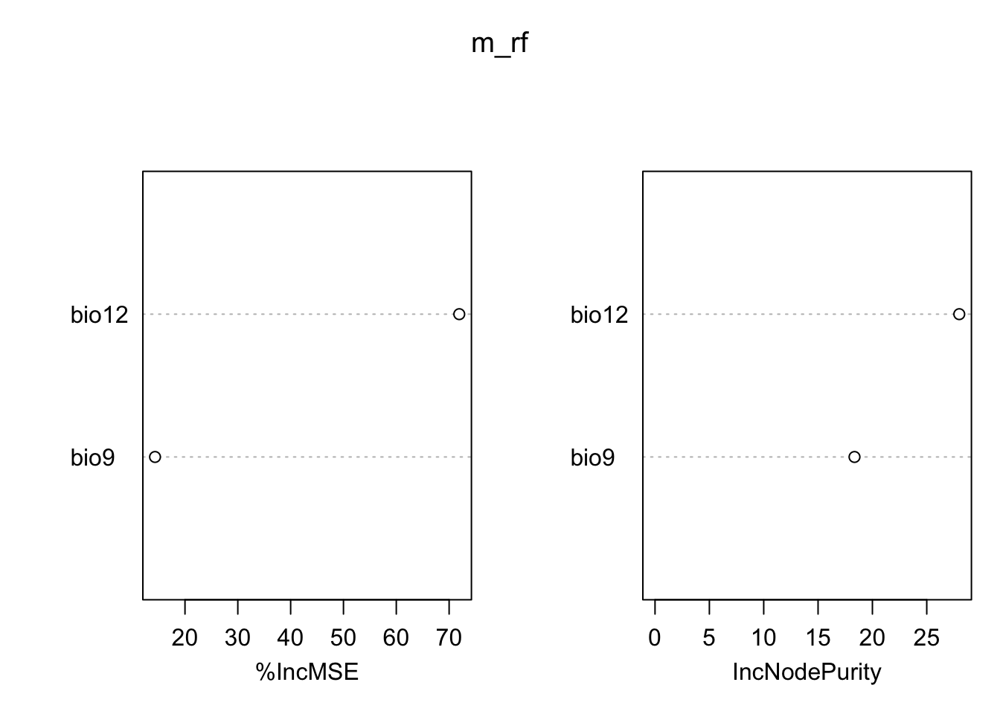
# Look at single trees:
head(getTree(m_rf,1,T))## left daughter right daughter split var split point status prediction
## 1 2 3 bio12 1065.103210 -3 0.56398104
## 2 4 5 bio12 568.039551 -3 0.83458647
## 3 6 7 bio9 12.342194 -3 0.10256410
## 4 8 9 bio9 6.123576 -3 0.42857143
## 5 10 11 bio9 7.524390 -3 0.85714286
## 6 12 13 bio9 8.596580 -3 0.08333333# Now, we plot the response surface:
xyz$z <- predict(m_rf, xyz, type='response')
wireframe(z ~ bio12 + bio9, data = xyz, zlab = list("Occurrence prob.", rot=90),
drape = TRUE, col.regions = cls, scales = list(arrows = FALSE),
zlim = c(0, 1), main='Random Forest', xlab='bio12', ylab='bio9',
screen=list(z = -120, x = -70, y = 3))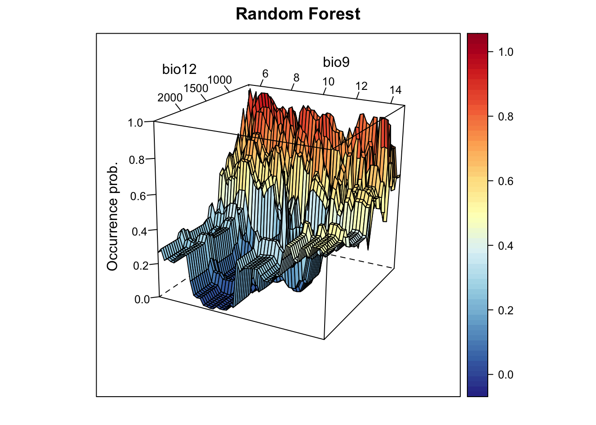
# Plot partial response curves:
par(mfrow=c(1,2))
partial_response(m_rf, predictors = sp_train[,my_preds], main='Random Forest', ylab='Occurrence probability')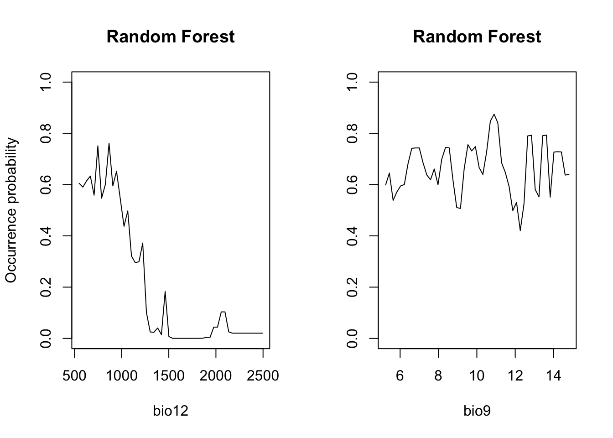
# Performance measures of RF
(perf_rf <- evalSDM(sp_test$Emberiza_citrinella, predict(m_rf, sp_test[,my_preds], type='response') ))## AUC TSS Kappa Sens Spec PCC D2 thresh
## 1 0.8343254 0.6428571 0.6428571 0.8095238 0.8333333 0.8222222 0.1757222 0.62# Map predictions:
r_rf_bin <- r_rf_pred <- terra::rast(cbind(bio_curr_df[,1:2],
predict(m_rf, bio_curr_df,type='response')),
type='xyz', crs=crs(bio_curr))
values(r_rf_bin) <- ifelse(values(r_rf_pred)>=perf_rf$thresh, 1, 0)
plot(c(r_rf_pred, r_rf_bin),main=c('RF prob.','RF bin.'), axes=F) 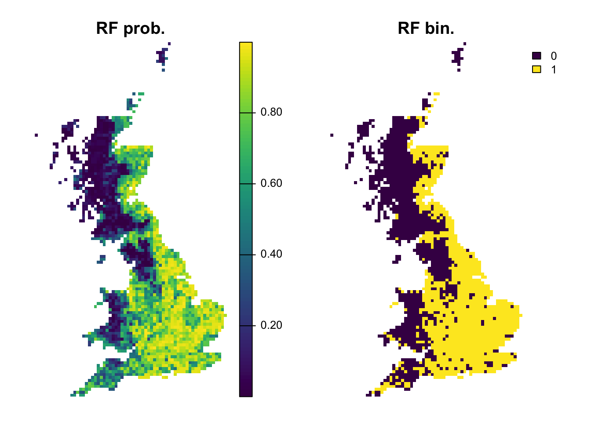
2.3.3 Boosted regression trees (BRTs)
Boosting is another averaging/ensemble approach for improving the
predictive performance of models (Hastie,
Tibshirani, and Friedman 2009; Guisan, Thuiller, and Zimmermann
2017). Boosting of CARTS is known under different names including
Gradient Boosting Machine (GBM), Generalised Boosted Regression Model
(GBM) and Boosted Regression Trees (BRTs) among others. In R it is
available in the package gbm with some additional functions
from Elith, Leathwick, and Hastie (2008)
provided in the dismo package. Elith,
Leathwick, and Hastie (2008) also provide a working guide for
using BRTs in species distribution modelling. Unlike Random Forests,
BRTs iteratively fit relatively simple trees by putting emphasis on
observations fitted poorly by the previous trees (by fitting the new
tree to the residuals of the previous tree). The final BRT can be
thought of as linear combination of all trees, similar to a regression
model where each term is a single tree (Elith,
Leathwick, and Hastie 2008). Thereby each tree is shrunk by the
learning rate (the shrinkage parameter, typically <1), which
determines how much weight is given to single trees. Generally, slower
learning (meaning smaller learning rates) are preferable. Similarly to
Random Forests, only a subset of the data (the bag fraction) is
used for fitting consecutive trees (but in contrast to Random Forests,
the subsets are sampled without replacement and thus constitute real
data splits). This bag fraction should typically range 0.5-0.75
(Elith, Leathwick, and Hastie 2008). The
tree complexity controls the interaction depth; 1 means
only tree stumps (with two terminal nodes) are fitted, 2
means a model with up to two-way interactions etc. In the regular
gbm()function, you have to define the maximum number of
trees fitted. Elith, Leathwick, and Hastie
(2008) recommend fitting at least 1000 trees. However, you want
to be careful not to overfit the model by fitting too many trees. The
dismo package provides the function gbm.step that
selects the optimum number of trees based on the reduction in deviance
achieved by adding a tree while predicting to the hold-out data
(1-bag fraction). If the optimal number of trees estimated
by the model is below 1000, you should decrease your learning rate; if
it is above 10000, you should increase your learning rate. A tutorial on
BRTs is contained in the dismo package: vignette('brt')
library(dismo)
library(gbm)
# Fit BRT
m_brt <- gbm.step(data = sp_train,
gbm.x = my_preds,
gbm.y = 'Emberiza_citrinella',
family = 'bernoulli',
tree.complexity = 2,
bag.fraction = 0.75,
learning.rate = 0.001,
verbose=F)##
##
## GBM STEP - version 2.9
##
## Performing cross-validation optimisation of a boosted regression tree model
## for NA and using a family of bernoulli
## Using 211 observations and 2 predictors
## creating 10 initial models of 50 trees
##
## folds are stratified by prevalence
## total mean deviance = 1.3699
## tolerance is fixed at 0.0014
## now adding trees...
# Variable importance:
m_brt$contributions## var rel.inf
## bio12 bio12 93.369436
## bio9 bio9 6.630564# Interactions (not very meaningful here with only 2 predictors):
gbm.interactions(m_brt)$interactions## bio12 bio9
## bio12 0 24.08
## bio9 0 0.00gbm.interactions(m_brt)$rank.list## var1.index var1.names var2.index var2.names int.size
## 1 2 bio9 1 bio12 24.08
## 2 3 <NA> 0 0.00# dismo provides some build-in functions for plotting response:
gbm.plot(m_brt, n.plots=2, write.title = FALSE)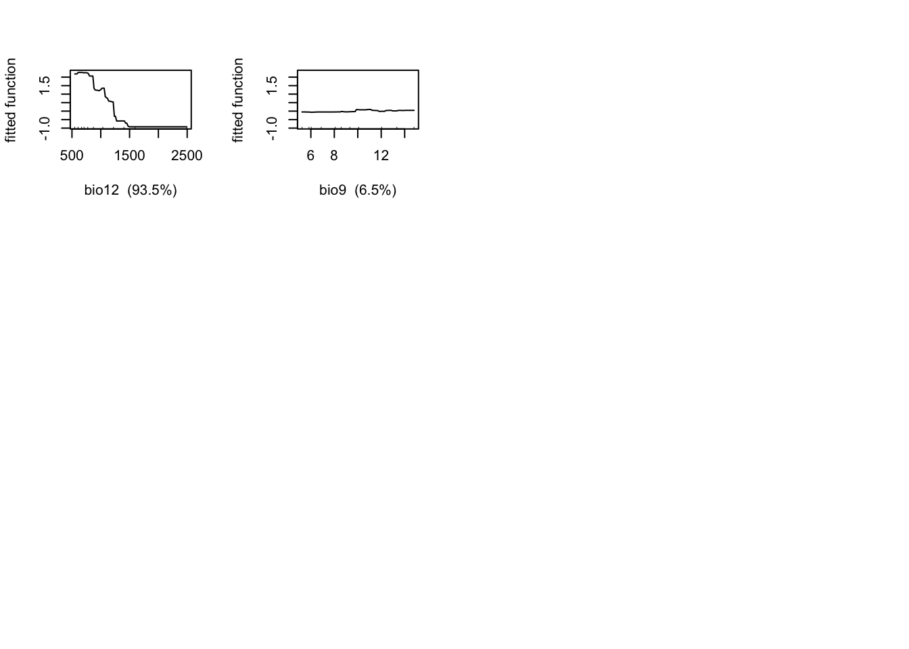
gbm.plot.fits(m_brt)# Now, we plot the response surface:
xyz$z <- predict.gbm(m_brt, xyz, n.trees=m_brt$gbm.call$best.trees, type="response")
wireframe(z ~ bio12 + bio9, data = xyz, zlab = list("Occurrence prob.", rot=90),
drape = TRUE, col.regions = cls, scales = list(arrows = FALSE),
zlim = c(0, 1), main='Boosted regression trees', xlab='bio12',
ylab='bio9', screen=list(z = -120, x = -70, y = 3))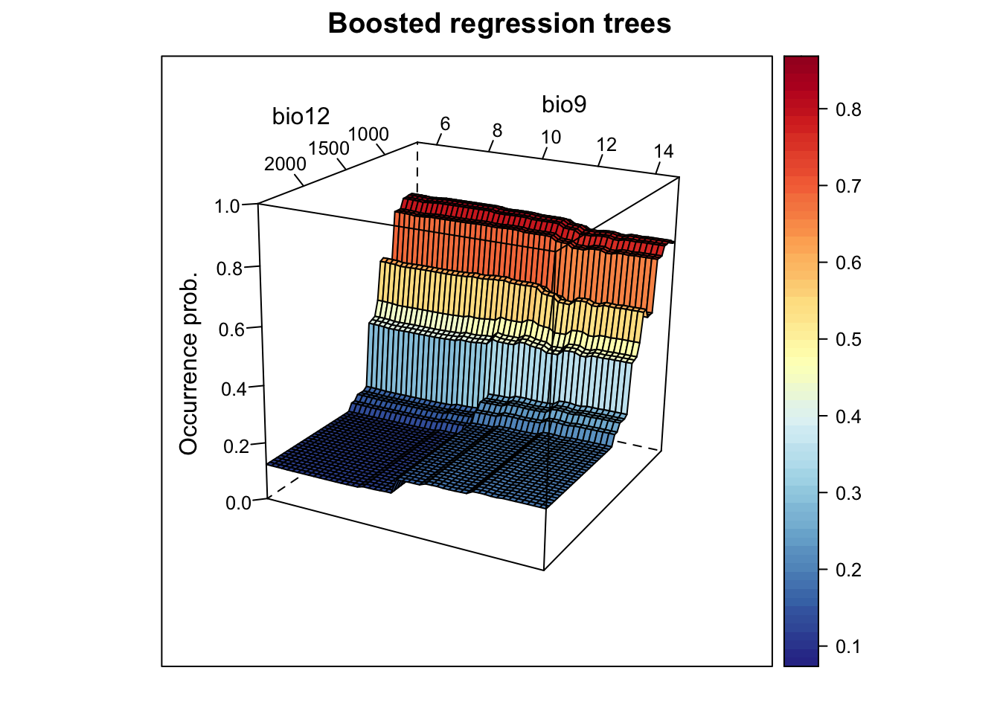
# Plot partial response curves:
par(mfrow=c(1,2))
partial_response(m_brt, predictors = sp_train[,my_preds], main='BRT', ylab='Occurrence probability')# Performance measures of BRT
(perf_brt <- evalSDM(sp_test$Emberiza_citrinella, predict.gbm(m_brt, sp_test[,my_preds], n.trees=m_brt$gbm.call$best.trees, type='response') ))## AUC TSS Kappa Sens Spec PCC D2 thresh
## 1 0.8831845 0.7380952 0.7337278 0.9047619 0.8333333 0.8666667 0.3442508 0.6# Map predictions:
r_brt_bin <- r_brt_pred <- terra::rast(cbind(bio_curr_df[,1:2],
predict.gbm(m_brt, bio_curr_df,
n.trees=m_brt$gbm.call$best.trees,
type="response")),
type='xyz', crs=crs(bio_curr))
values(r_brt_bin) <- ifelse(values(r_brt_pred)>=perf_brt$thresh, 1, 0)
plot(c(r_brt_pred, r_brt_bin),main=c('BRT prob.','BRT bin.'), axes=F) 2.3.4 Maxent
In recent years, maximum entropy modelling of species distributions has become very popular and proved as one of the best-performing methods in model comparisons Elith et al. (2006). The implementation Maxent (Phillips, Anderson, and Schapire 2006; Elith et al. 2011; Merow, Smith, and Silander Jr 2013) now constitutes the most widely used SDM algorithm. It was originally offered with a stand-alone Java package with user interface (possibly one reasons for its popularity). Since a couple of years, some packages like dismo have build-in functions to communicate with this Maxent programme. Very recently, Steven Phillips (“Mr. Maxent”) introduced a true R version of Maxent, the maxnet package.
Maxent is a presence-only method, but unlike profile methods it uses background data (where presence is unknown) against which it contrasts the observed presences. Elith et al. (2011) provide a simplified explanation of Maxent (while the original paper by Phillips, Anderson, and Schapire (2006) focused on explanations from machine-learning perspective) stating that Maxent aims to minimise the relative entropy between the probability density of presences and the probability density of the environment estimated in environmental (not geographic!) space. The density of available background data in environmental/covariate space can be regarded as the null model that assumes that the species will occupy environmental conditions proportional to their relative availability in the landscape (Guisan, Thuiller, and Zimmermann 2017). Maxent allows fitting very complex, highly non-linear response shapes (Merow, Smith, and Silander Jr 2013), defined by so-called feature classes. Maxent currently recognises six features classes, which are described in more detail by Elith et al. (2011) and Merow, Smith, and Silander Jr (2013): linear, product, quadratic, hinge, threshold and categorical. We already know linear and quadratic features from GLMs. Products allow simple interactions between all possible pair-wise combinations of predictor variables. Thresholds allow a step in the fitted function (as we have seen in CARTs) and make a continuous predictor binary assigning 0 below the threshold and 1 above the threshold. Hinge features are similar to thresholds only that they do not fit abrupt steps but a change in the gradient of the response (a bit like piecewise linear splines). Categorical features split a predictor with \(n\) categories (such as land cover) into \(n\) binary features assigning 1 when the feature is expressed and 0 otherwise. If the data contain more than 80 presences, then Maxent will by default use all feature classes in model fitting (otherwise it will automatically determine the number of features based on the number of presences). This can easily lead to more features that are explored in the model than actual presences (Merow, Smith, and Silander Jr 2013). Of course, users can also specify features themselves. Generally, the selection of features should be guided by ecological plausibility and be considered during model conceptualisation. During model fitting, Maxent will select features based on regularization (trading-off likelihood and model complexity) to avoid overfitting.
As the density of presence points in environmental space is contrasted against all available environments, choosing the background data can be quite crucial in Maxent and should be guided by the spatial scale of the ecological question (Merow, Smith, and Silander Jr 2013). For example, the geographic extent of background data should only encompass areas that are accessible by dispersal and which the species is equally likely to reach. If there is reason to assume that the presence data are spatially biased, then this should also be considered when deriving background data, for example by inducing the same spatial bias in the background (Kramer-Schadt et al. 2013). Here, we avoid the background data issue as we have true absence data available.
library(maxnet)
# Fit Maxent
m_maxent <- maxnet(p=sp_train$Emberiza_citrinella, data=sp_train[,my_preds],
maxnet.formula(p=sp_train$Emberiza_citrinella, data=sp_train[,my_preds], classes="lh"))
# HINT: try playing around with the classes="lqpht" argument
# Now, we plot the response surface:
xyz$z <- predict(m_maxent, xyz, type="logistic")
wireframe(z ~ bio12 + bio9, data = xyz, zlab = list("Occurrence prob.", rot=90),
drape = TRUE, col.regions = cls, scales = list(arrows = FALSE),
zlim = c(0, 1), main='Maxent', xlab='bio12', ylab='bio9',
screen=list(z = -120, x = -70, y = 3))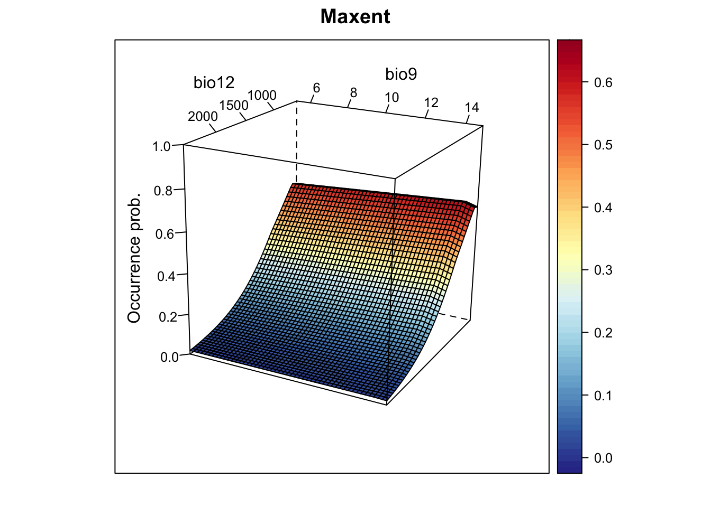
# Plot partial response curves:
par(mfrow=c(1,2))
partial_response(m_maxent, predictors = sp_train[,my_preds], main='Maxent', ylab='Occurrence probability')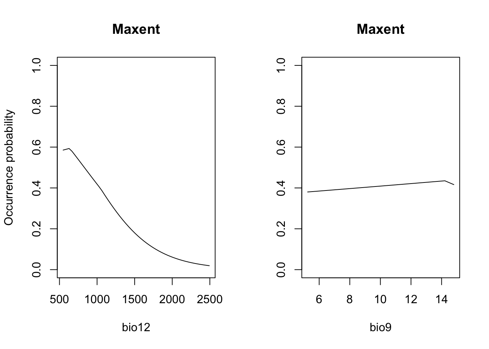
# Performance measures of Maxent
(perf_maxent <- evalSDM(sp_test$Emberiza_citrinella, predict(m_maxent, sp_test[,my_preds], type='logistic') ))## AUC TSS Kappa Sens Spec PCC D2 thresh
## 1 0.8774802 0.7172619 0.7119645 0.9047619 0.8125 0.8555556 0.2581671 0.41# Map predictions:
r_maxent_bin <- r_maxent_pred <- terra::rast(cbind(bio_curr_df[,1:2],
predict(m_maxent, bio_curr_df, type="logistic")),
type='xyz', crs=crs(bio_curr))
values(r_maxent_bin) <- ifelse(values(r_maxent_pred)>=perf_maxent$thresh, 1, 0)
plot(c(r_maxent_pred, r_maxent_bin),main=c('Maxent prob.','Maxent bin.'), axes=F) 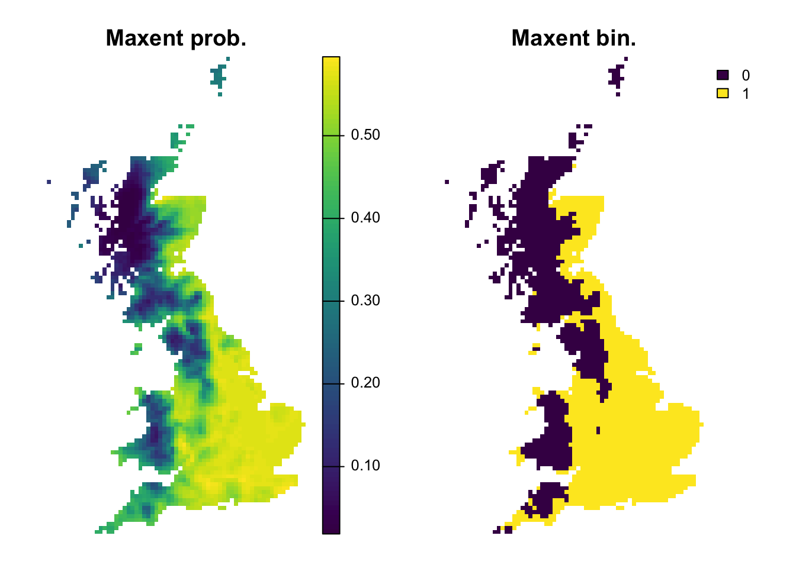
2.4 Comparing all algorithms
We can now compare the performance of all algorithms on our independent data. Also, we store this information for running the ensembles in the next tutorial.
(comp_perf <- rbind(bc = perf_bc, glm = perf_glm, gam = perf_gam,
cart = perf_cart, rf = perf_rf, brt = perf_brt, maxent = perf_maxent))## AUC TSS Kappa Sens Spec PCC D2
## bc 0.7579365 0.4017857 0.4090909 0.5476190 0.8541667 0.7111111 -0.3738568
## glm 0.8903770 0.7172619 0.7119645 0.9047619 0.8125000 0.8555556 0.3702978
## gam 0.8859127 0.7172619 0.7119645 0.9047619 0.8125000 0.8555556 0.3654815
## cart 0.8196925 0.5922619 0.5958084 0.7380952 0.8541667 0.8000000 0.1693440
## rf 0.8343254 0.6428571 0.6428571 0.8095238 0.8333333 0.8222222 0.1757222
## brt 0.8831845 0.7380952 0.7337278 0.9047619 0.8333333 0.8666667 0.3442508
## maxent 0.8774802 0.7172619 0.7119645 0.9047619 0.8125000 0.8555556 0.2581671
## thresh
## bc 0.175
## glm 0.525
## gam 0.530
## cart 0.800
## rf 0.620
## brt 0.600
## maxent 0.410# We add a column containing the names of the algorithm
comp_perf <- data.frame(alg=row.names(comp_perf),comp_perf)
# Adapt the file path to your folder structure
write.table(comp_perf, file='data/SDM_alg_performances.txt', row.names=F)3 Homework prep
As homework, solve the exercises in the blue box below.
Exercise:
Use the species-climate data that you prepared for your own species (from the previous practical b5) and fit SDMs using at least three different algorithms. Compare the models, which one performs best?